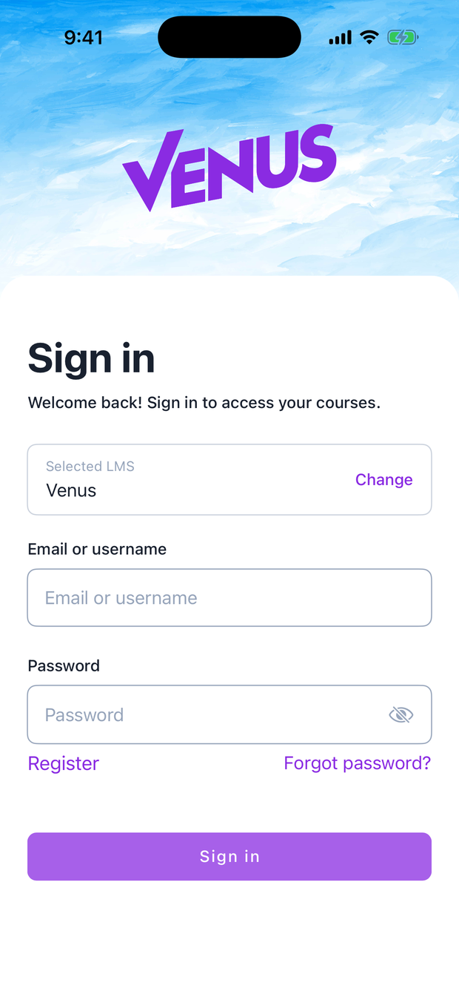

Open X Project¶
One mobile app that works with any Open edX platform, plus the registry and admin console behind it.
Instead of every Open edX platform shipping its own app, a learner installs one app, finds their platform in a catalog, and signs in. Platform owners put their instance in that catalog by filling out a short wizard. Administrators keep the catalog safe and act on what learners report from the app.

Pilot status
Open edX has approved this as a pilot. It runs independently and not under the Open edX name. If the pilot goes well, Open edX decides whether to run it officially. The iOS and Android apps live in separate repositories that will move to the official Open edX repos at that point.
Live registry: openedx-lms.stepanok.com
Who this is for¶
-
Learners
Install the app, find your platform, sign in, and report anything that looks wrong. → For learners
-
LMS owners
Register your Open edX instance so it appears in the app, and manage how it looks. → Register your LMS
-
Administrators
Review new platforms, triage learner complaints, and block bad actors. → Admin console
-
Providers
Run one branded app across several of your own platforms. → Provider mode
The short version¶
- An owner registers their Open edX platform through the wizard. It goes live in the catalog right away; an admin confirms it afterward.
- A learner opens the app, finds the platform, and signs in with their normal Open edX account. The app themes itself to match the platform.
- If something is wrong (adult content, a scam, impersonation), the learner reports the platform from the app's Profile tab while signed in.
- The report lands in the admin triage inbox within seconds. An admin opens the platform to check, then blocks it (removed from the app) or dismisses the report, and emails the owner.
- The owner sees the block and the reason in their own workspace, fixes the issue, and requests a re-review.

See How it works for the full picture.